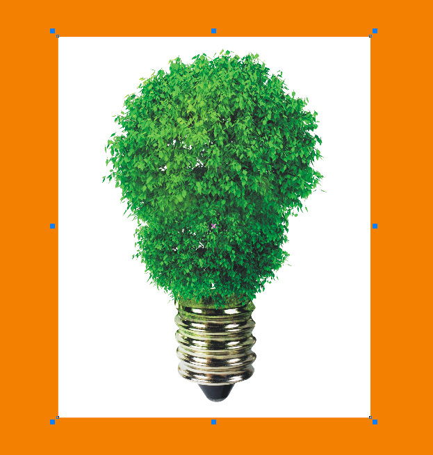
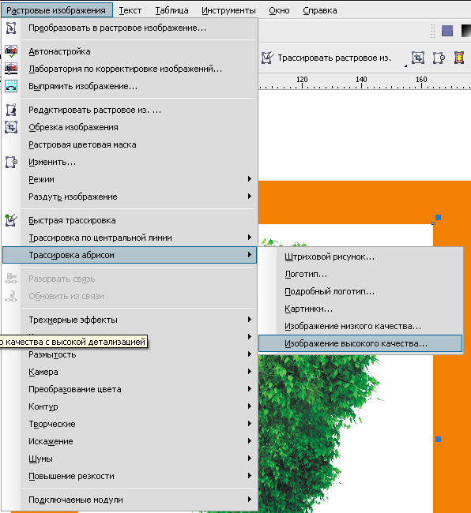
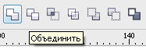
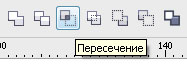

Создание маски с помощью трассировки
sergey / 13.07.2010, 17:15/00:41
Форум:
Предлагаю создание маски с помощью трассировки.
Редко бывает потребность обработки растрового изображения, когда под рукой нет необходимых программ. Используем CorelDraw.
К примеру, надо отделить белый фон от изображения.
Существует несколько способов, но рассмотрим применение трассировки.

Создаем дубликат изображения.
Или убираем галочку PowerTrace — Параметры — Удалить сходное изображение.
Применяем трассировку.

В элементах управления трассировкой "Деталь" ставим на максимум.
Удаляем ненужные объекты.
Для удобства, сместил растровое изображение.
Объединяем 
Помещаем обратно расстровое изображение
и "Пересекаем"  с полученной маской.
Результат оставляет желать лучшего.
Но этому есть своё применение.


И чего ты так по спойлерам прибиваешься? ;D
Sancho, жара. Голова не варит.
Я прочитал тему, а потом уже понял, что моя тема не в тему.
...И спрятал всё в спойлер.
Все это - еще один повод для того, чтоб разработчикам улучшить функциональность Bitmap Color Mask :)